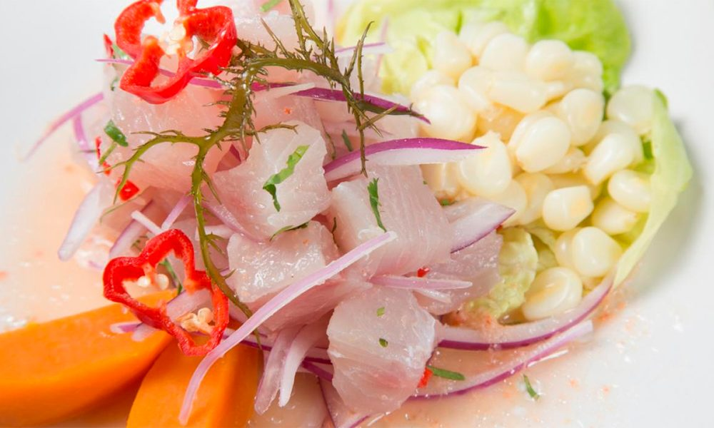
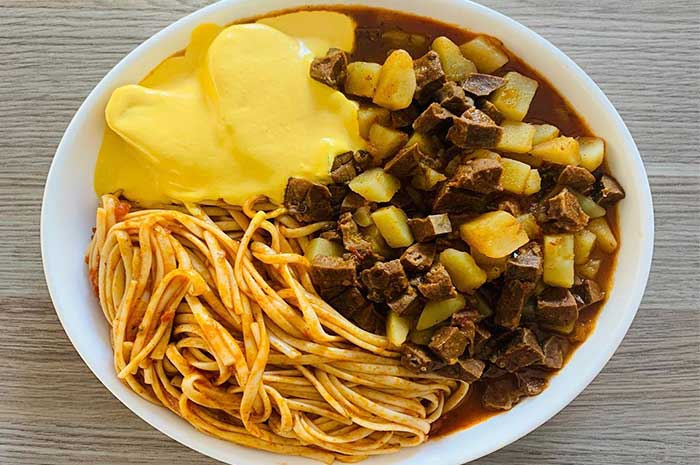

Hola mis amig@s!! en este blog encontraras recetas peruanas de comidas muy deliciosas.
Este es un plato marino delicioso, y muy sencillo de preparar.
Hay muchas personas que tienen diferentes foramas de prepararlo, por ejemplo en el norte peruano lo preparan con espinas!!!
1 kg de pescado fresco, 7 limones o limas,aji o rocoto, aji-nomoto(sazonador peruano),sal y pimienta al gusto ,1/2 cucharada de ajos molido, gotas de gengibre o kión,2 cuchadas de culantro o cilantro picado fresco, 2 cebollas moradas cortadas bien delgadas , maiz de choclo desgranado, camote,cachillullo
Lo primero que debes hacer para poder elaborar la receta fácil de ceviche peruano es exprimir los 12 limones para extraer su jugo, resérvalo para más adelante. Luego, corta el pescado en trozos de 3 centímetros, aproximadamente. Coloca los trozos en el recipiente que vayas a utilizar para servir el plato.
Mezcla el pescado con el ají amarillo picado, el caldo de pescado y el cilantro. Coloca también la cebolla cortada en julianas y el ajo machacado. Déjalo reposar unos minutos para que se marine bien e se impregne de todos los sabores.
Salpimienta al gusto y coloca a un lado del plato el camote sancochado, la lechuga y el maíz tierno también hervido.
Después, vierte el zumo de limón por todo el plato de manera que quede todo bien cubierto. Por último, corta una lámina de ají limo rojo y colócala a modo de decoración. Resérvalo en el frigorífico para que se enfríe, puesto que este es un plato que se sirve frío. El ceviche peruano es un plato que actúa como aperitivo, por lo que puedes acompañarlo con un arroz con camarones o un delicioso salmón con salsa de gambas. ¡Listo para comer!
Este plato plato se come mucho en la costa peruana, disfrutaras de un sabor que te dejara sin palabras.

1 pechuga de pollo, 4 panes francés ,1 taza de leche evaporada, 2 cucharadas de aceite vegetal 1 cebolla pequña picada en cuadraditos, 2 dientes de ajo picados, 1 cucharadita de aji mirassol licuado, 2ajies amarillos son venas ni semillas, 1 cucharada de palilllo, 1 rama de perejil picado finamente, sal, piemienta y comino al gusto
Para empezar, en un recipiene del tamaño adecuado, debes colocar los panes dezmenuzados o rallados u vierte la leche. Remueve bieny deja que se remojen
Luego por a calenar una olla con agua en cantidad necesaria mas una cucharita de sal y hcha la gallina para sancocharla. El tiempo de coccion suele ser unos 25 a 30 minutos. Verifica con un tenedor que la carne esta blandita, cuando este lista retira del fuego
Deja que la gallina se enfrie el tiempo necesario, despues procede a demenuzar la carne y reserva. Tambien reserva el caldo de la coccion pues lo necesitaras mas adelante
A continuacion pon a calentar otra olla con un chorro de aceite, agrega la cebolla y deja sofreir hasta que esta tome un aspecto transparente. Posteriormente adiciona el ajo, el ají mirasol, el ají amarillo, el palillo, pimienta, comino y una pizca de sal. Deja freir por unos dos minutos mas
Transcurrido el tiempo indicado vierte en la olla el pan remojado con la leche y adiciona una taza de caldo, mezcla y deja cocinar durante 5 minutos
Después saca el preparado y viertelo en una licuadora- Licúa hasta que la mezcla quede con un aspecto cremoso. Es propable que necesites echar un poco más al caldo para facilitar el liquado.
Seguidamente regresa el producto a la olla, agrga la carne de gallina previamente desmenuzada y prosigue con la cocción durante 5 minutos adicionales. Para terminar rectifica la sal. Tambien debes asegurarte que la mezcla tenga la consistencia deseada. Cuando todo éste conforme retira del fuego y sirve acompañado de papas sancochadas y arroz graneado.Una comida muy facil de preparar con muy pocos ingradientes

6 papas medianas para sacochar , 5 ajies amarrillos, 2 paquetes de galleta soda, 1 taro de leche, 2 cebollas, 3 dientes de ajo, sal al gusto, huevo, lechuga y aceituna para acompañar
Lava bien las papas y ponlas a cocinar. En una cacerola con agua abundante y sal, incorpora las papas con cáscara y los huevos para que se cocinen. Las papas estarán listas cuando insertes un cuchillo en ellas y entre fácilmente
Saca las papas y los huevos. Una vez cocidos, escurre las papas y los huevos y déjalos enfriar.
Corta las papas y los huevos en rodajas. Pela las papas y los huevos y córtalos en rodajas. Resérvalos en una fuente.
Sofríe el ají. En una sartén con un poco de aceite caliente, sofríe los ajíes sin semillas, la cebolla picada y el diente de ajo entero. Déjalos enfriar
Prepara la salsa. En una licuadora incorpora el sofrito de ajíes, cebolla y ajo, la leche, el queso, el aceite, las galletas, sal y pimienta. Licua por unos minutos hasta que consigas una mezcla homogénea. El espesor de la salsa dependerá de la cantidad de galletas que incorpores, mientras más galletas, más espesa resultará la salsa. Debe quedar una salsa espesa, nunca parecerse a una pasta.
Arma el plato. En una fuente grande o en cada uno de los platos de los comensales, coloca las hojas de lechuga (bien lavadas). Sobre ellas coloca las papas y cúbrelas con la salsa.
Decora el plato. Sobre la salsa coloca los huevos y las aceitunas negras. También puedes añadir unas hojitas de perejil.
Esta comida es muy tradicional, y muy tipico aqui en el Perú. Cuenta la historia que a los esclavos les daban los intestinos de la vaca para que puedan comer, y en su ingeniosidad aprendieron a preparar lo que hoy conocemos como la chanfainita. Este plato se fue transmitiendo de generacion en generacion hasta llegar a un deicioso platillo y muy querido por todos los peruanos.
La chanfainita lo puedes acompañar con "Papa a la huancaina" y con "Tallarines rojos", incluso con el "Ceviche". La convinacion de estos platos te dejarán con la boca abierta!
6 papas medianas para sacochar , 1/2 kg de bofe para la chanfainita,
Lo primero que debes hacer es limpiar y labar muy bien el bofe. A continuacion , ponlo a hervir 25 minutos en una olla con agua junto con 2 ramitas de hierbabuena y una pizca de sal.
Mientras va sancochándose o hirviéndose el bofe,pala y pica verduras para el guiso. Corta las papas en cubos pequeños de 1cm aproximadamente y colócala en un recipiente con agua para que no se oxiden. Pica tambien la cebolla roja muy fina y alista el resto de ingredientes.
Truco: si no tienes el caldo de la carne puedes aprovechar el agua de la coccion del bode, que tambien tendrá mucho sabor.
Una vez cocinado el bofe, retira y espera a que se enfrie un poco. A continuación, cortalo en cubos pequeños, casi del tamaño de la papa.
Prepara la olla para el guiso de chanfainita. Calienta un chorro de aceite a fuego medio y agrega la cebolla y el ajo molido.
Cuando la cebolla quede ligeramente transparente, agrega el ají panca al aderezo.
Seguidamente, añade el caldo de carne, las papas en cubos, el bofe y la hierbabuena. Sazona con sal, pimienta, comino y orégano al gusto. Remueve bien para que todos los ingredientes se integren correctamente y deja hervir unos 10 minutos, hasta que la papa esté cocinada.
Es posible que necesite algo más de cocción, esto dependerá de la intensidad de tu fuego. Cuando el guiso de chanfainita de bofe haya espesado ligeramente, manteniendo el jugo, está listo para servir. ¡Provecho!